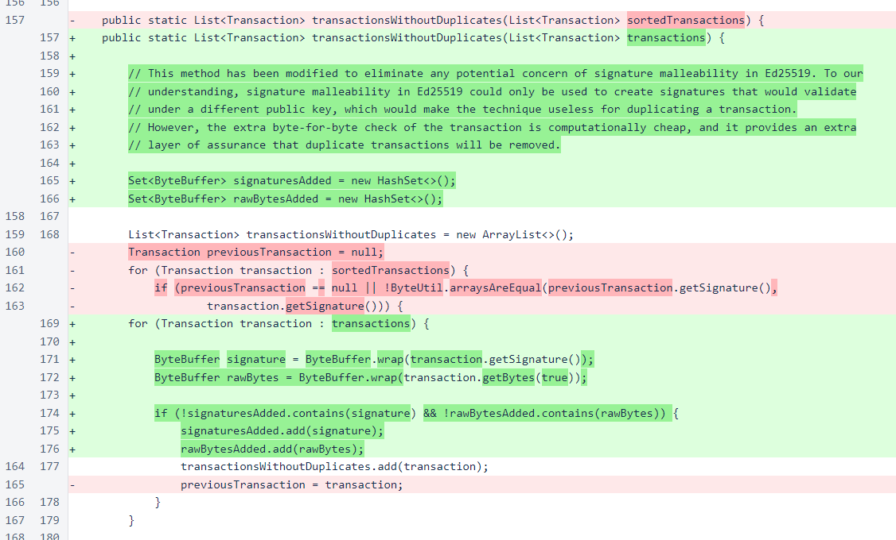
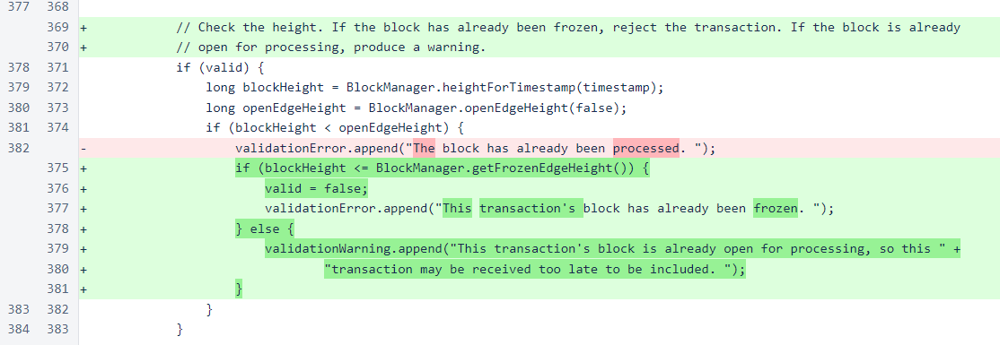

Nyzo version 498 (commit on GitHub) improves transaction deduplication and initial validation.
This version does not need to be installed on the sentinel, as the sentinel does not process incoming transactions.
Nyzo uses Ed25519 for digital signatures. Ed25519 is a modern, well-understood, and widely used digital signature system. However, Ed25519 signatures are malleable, and malleability presents potential concerns that a valid transaction could be duplicated in the system, resulting in a multiple spend.
According to our understanding of malleability in Ed25519, described in the paper that introduced this system, signature malleability in Ed25519 is nothing more than a mathematical curiosity. Malleability would not allow an attacker to forge a message under a target private key or derive a new valid signature for an existing message under the original private key. The following paragraph is the “Malleability” section of this paper.
Malleability. We also see no relevance of “malleability” to the standard definition of signature security. For example, if we slightly modified the system then replacing S by -S and replacing A by -A (a slight variant of the “attack” of [75]) would convert one valid signature into another valid signature of the same message under a new public key; but it would still not accomplish the attacker’s goal, namely to forge a signature on a new message under a target public key. One such modification would be to omit A from the hashing; another such modification would be to have A encode only |A|, rather than A.
However, secure systems should not be engineered with the minimum required for security. Secure systems should be engineered with layer upon layer of assurances to reduce the probability that unforeseen issues in one layer or part of the system result in an actual compromise of the integrity of the system. With that in mind, we have modified the process for deduplicating transactions to consider every byte of signing input in addition to the signature itself.
The transactionsWithoutDuplicates() method of the BalanceManager class is responsible for removing duplicate transactions. The previous version of the method relied on a sorted list of transactions, and it would only add a single copy of a group of identical transactions to the output list.
In the new implementation, sets of ByteBuffer objects are used to track each transaction that has been added to the output list, and a transaction will only be added if both its signature and the bytes used as signing input are unique. As this implementation no longer relies on the input list being sorted, this list has been renamed from sortedTransactions to transactions.
The other changes in this version are in the performInitialValidation() method of the Transaction class. The comments in this method have been edited for clarity and correctness, and handling of the block height of the transaction has been updated.
Previously, an error was produced when the block of the transaction was behind the open edge height. However, the valid flag was not set to false, so the transaction was still added to the pool. This logic has been corrected in two ways. The frozen edge is now also checked, and an error is produced and the transaction rejected for transactions at or before the frozen edge. Additionally, for transactions that are behind the open edge but past the frozen edge, a warning is now produced instead of an error.
For this issue, ∩30,000 was awarded to 1419...038d.